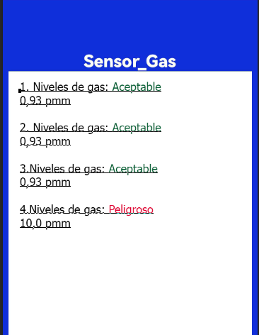
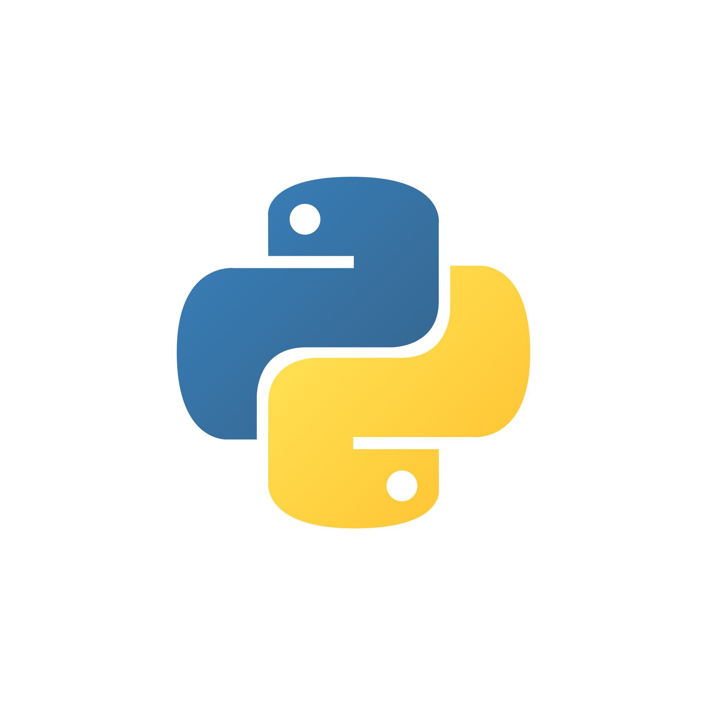
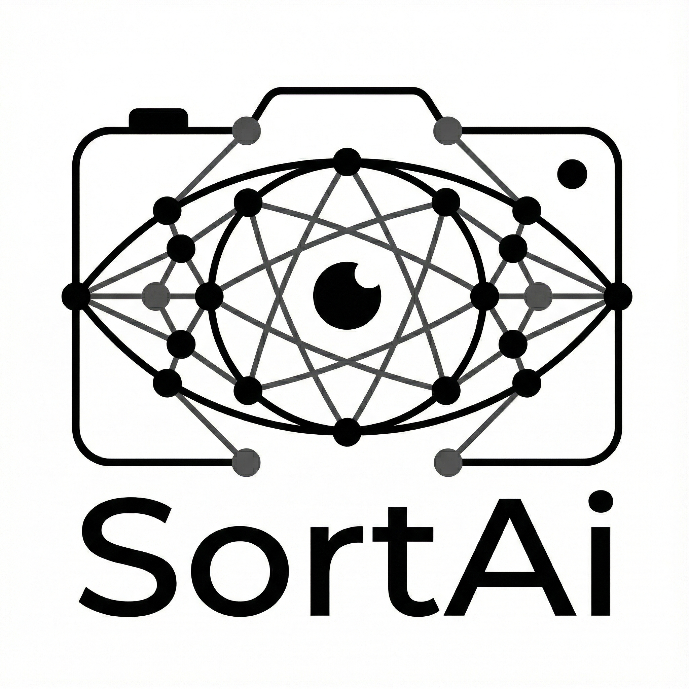
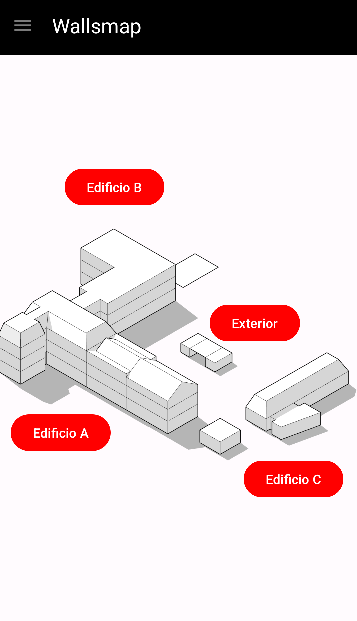

Sensor Gas
Proyecto con ESP32 y conexión WiFi, integrado con una app Android. Me encargué del circuito, la medición en tiempo real y la conectividad con la app.
Ingeniero en Informática orientado al desarrollo full stack, soporte TI, bases de datos y automatización, con capacidad de análisis, trabajo en equipo y enfoque práctico. Me interesa construir soluciones útiles, mantener sistemas ordenados y aportar en equipos donde la mejora continua tenga impacto real. La Serena, Chile.
Estas son las áreas donde me muevo con más soltura. Combino desarrollo full stack, soporte TI, bases de datos y automatización para construir soluciones útiles y ordenadas.





Se realizó servicio técnico en una feria de la universidad, dando soporte a notebooks en temas de software.
Trabajé como desarrollador full stack, participando en el rediseño del sistema e implementando funciones para facilitar la gestión de practicantes. Automaticé procesos como el registro de fechas de inicio y término, además del envío de credenciales de acceso a la nube de la empresa mediante Nextcloud.

Proyecto con ESP32 y conexión WiFi, integrado con una app Android. Me encargué del circuito, la medición en tiempo real y la conectividad con la app.


Aplicación inclusiva con asistente de voz para guiar usuarios dentro de la universidad. Me encargué del módulo visual y de la integración entre módulos.
Tengo más ideas y proyectos en camino. Si quieres ver más, revisa mi GitHub o escríbeme.
Ver más proyectosIngeniero en Informática apasionado por el desarrollo de software y la inteligencia artificial. Enfocado en crear soluciones eficientes, aprender continuamente y aportar valor mediante la tecnología y el trabajo colaborativo.
Ingeniero en Informática con interés en el desarrollo de software, aplicaciones web e inteligencia artificial. Me caracterizo por mi capacidad de aprendizaje continuo, resolución de problemas y trabajo colaborativo, adaptándome con facilidad a nuevos entornos y tecnologías.
Durante mi formación participé en diversos proyectos tecnológicos, destacando el desarrollo de un sistema de visión por computadora e inteligencia artificial, donde asumí responsabilidades de coordinación, organización de tareas y apoyo en la documentación técnica del proyecto. Esta experiencia fortaleció mis habilidades de liderazgo, comunicación y gestión de equipos.
Actualmente busco incorporarme a una organización donde pueda aportar mis conocimientos técnicos, seguir desarrollando mis competencias profesionales y contribuir a la creación de soluciones tecnológicas que generen valor para las personas y las empresas.
Tu mensaje será respondido a la brevedad.
Canales directos para responder rápido y sin ruido.